Reproduction et animation d'une illustration
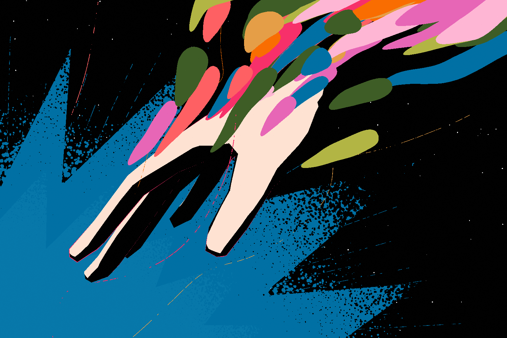
Reproduction et animation d'une illustration de Lesliesuper. Je voulais créer d'avantage d'animations procédurales, et les gouttes m'ont semblé être un projet intéressant.
Informations
Crédits
Illustration d'origine par Lesliesuper
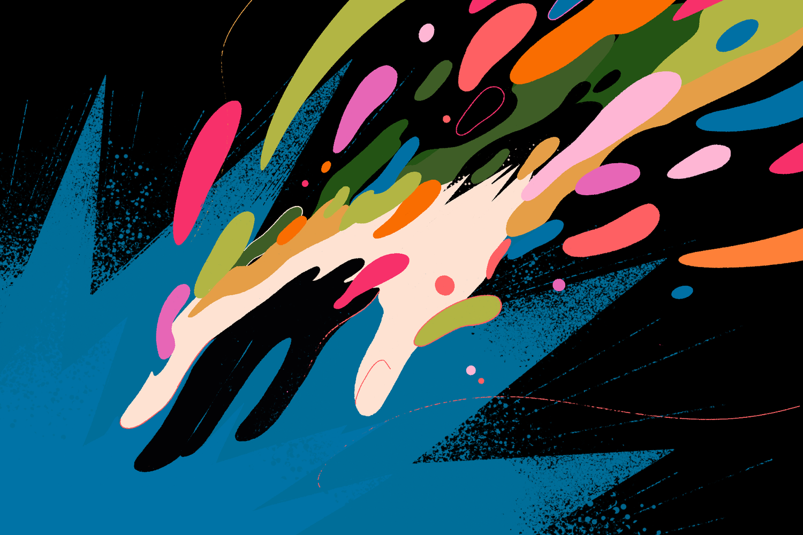
Contexte
Utilisation de l'IA générative?
Aucune utilisation dans ce projet.
Processus 1/5
Les gouttes
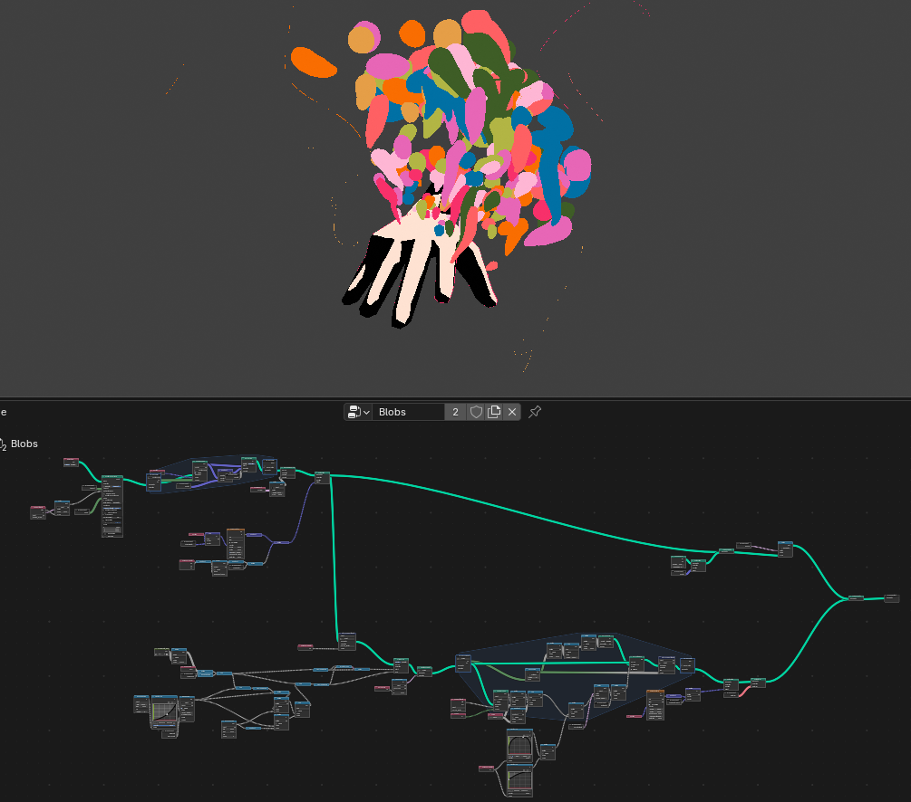
Les gouttes sont au cœur de cette animation. Je les ai réalisées à l'aide d'un système de noeuds de géométriques, ce qui me permet d'ajuster et de modifier facilement le résultat. Les lignes utilisent le même système avec des valeurs différentes.
Processus 2/5
La main
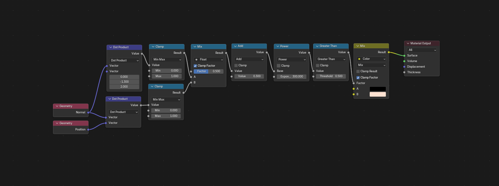
Le shader
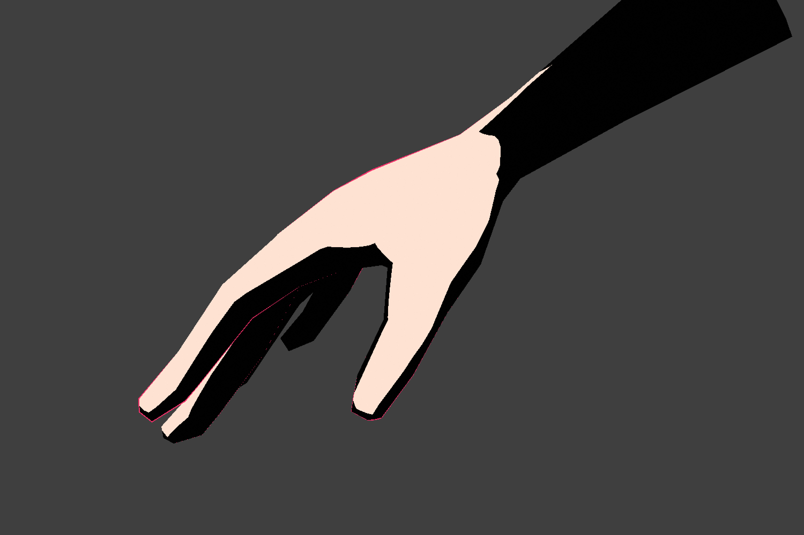
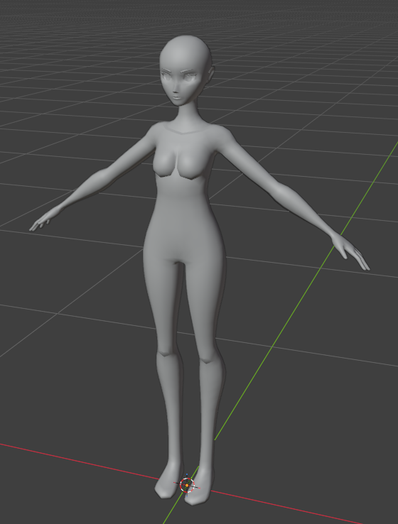
Projet antérieur
La main provient d'un projet antérieur. Je l'ai simplifiée à l'aide de modificateurs afin d'altérer volontairement les formes propres à la 3D et d'obtenir un rendu plus stylisé.
Processus 3/5
L'arrière-plan
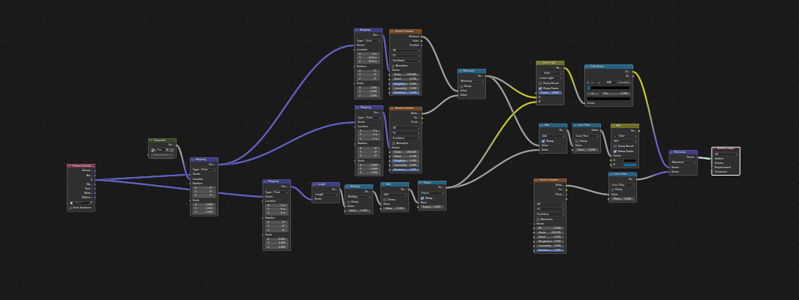
Shader du quad arrière
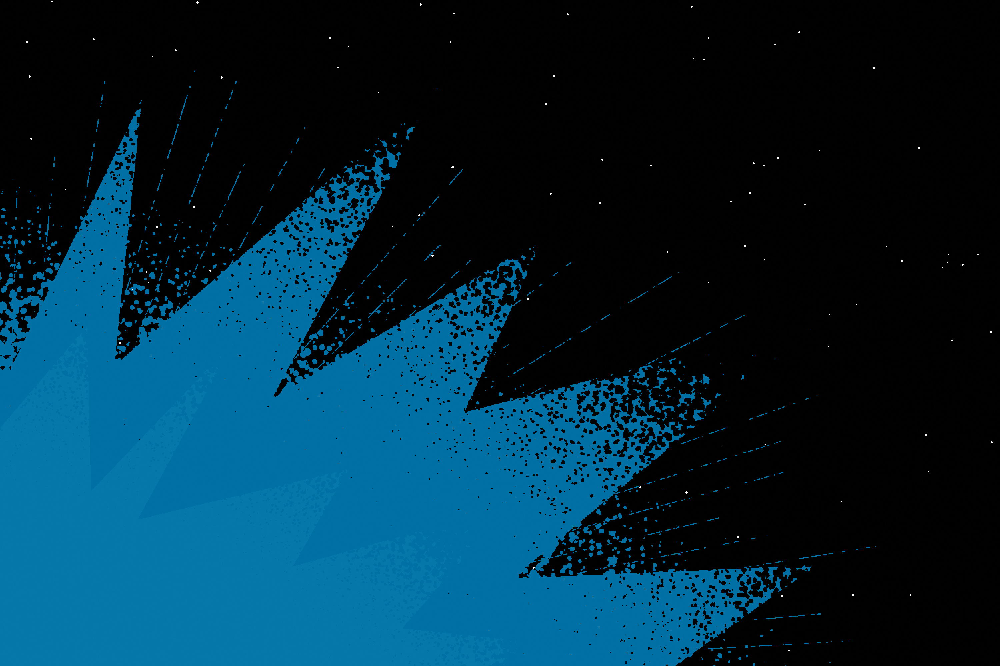
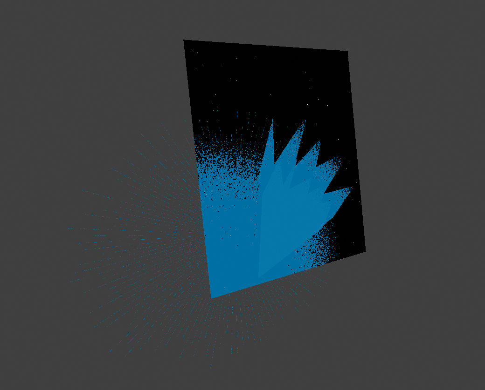
Cette étape fut simple : quelques quads avec des shaders. Les lignes reposent sur un système de nœuds géométriques, lui aussi très simple.
Processus 4/5
L'animation
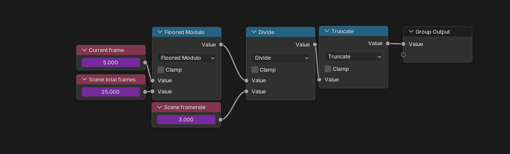
Utilisation de drivers pour controller la fréquence d'images
Sur un
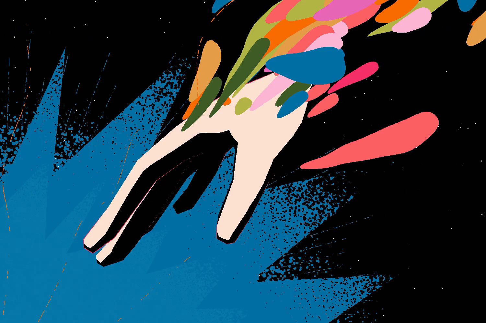
Sur trois
J'ai choisi d'animer sur trois images, car le grand nombre d'éléments en mouvement rendait l'animation trop chaotique.
Processus 5/5
Le compositing
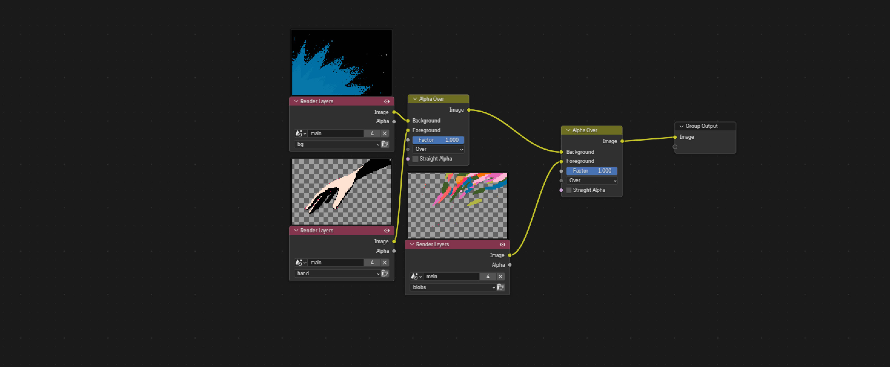
Compositing
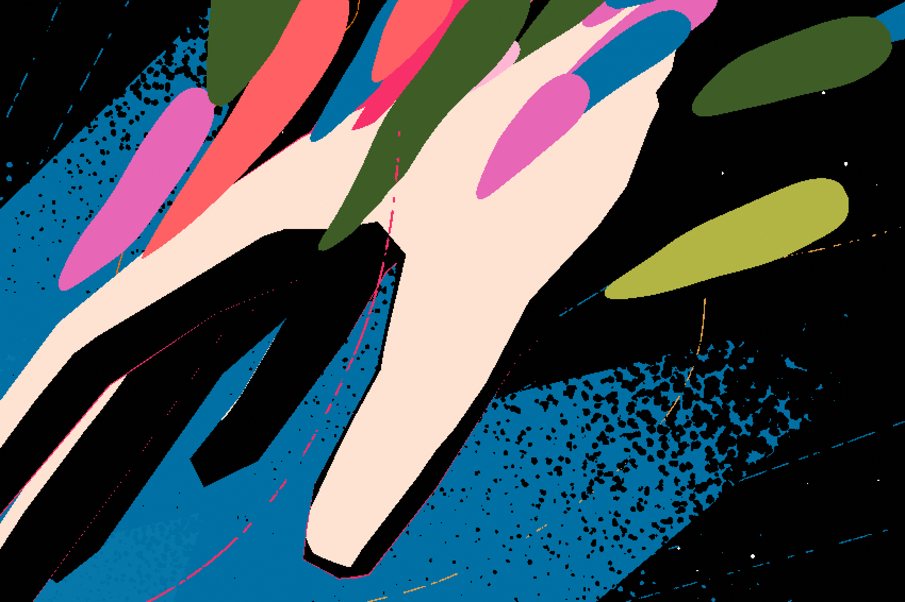
Avec clipping
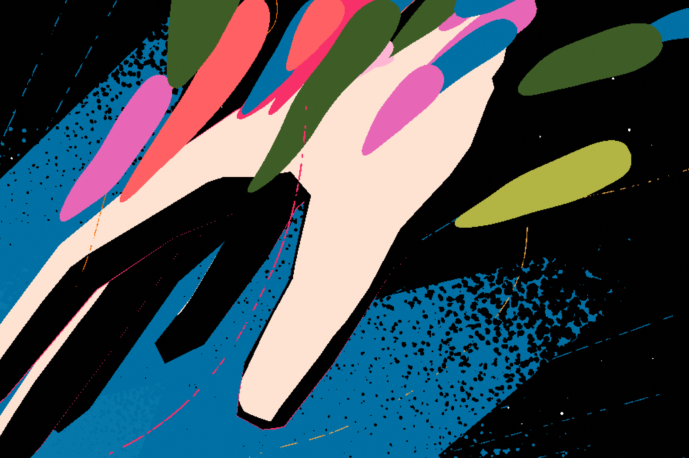
Sans clipping
Je n'aimais pas voir les gouttes traverser la main, car cela détournait l'attention du style plus illustratif. J'ai donc séparé les gouttes et la main sur deux calques différents.
Résultat
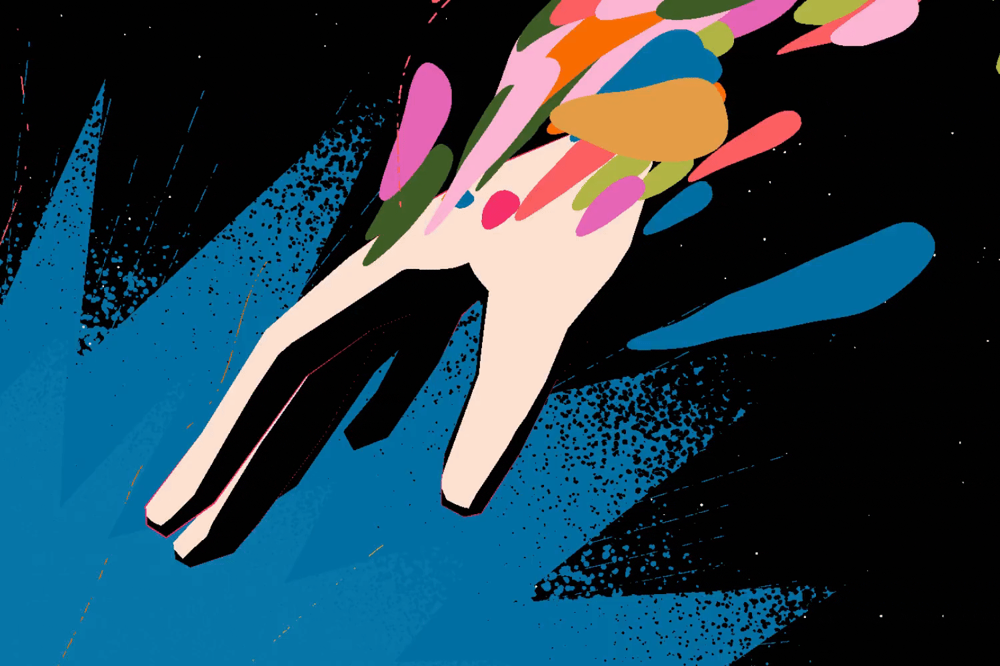
En conclusion
Le plus grand défi fut de créer les gouttes, leur forme, leur trajectoire, puis de les faire fonctionner en boucle. Par contre, j'ai finalement appris à utiliser les drivers et fut surpris de ne pas avoir rencontré cette incroyable fonctionnalité plus tôt.